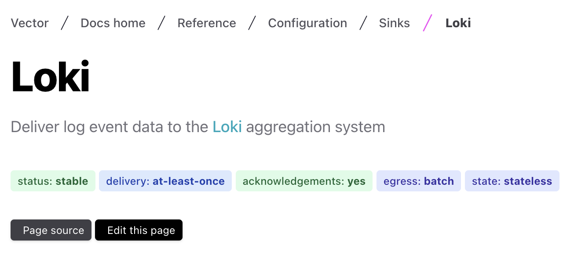
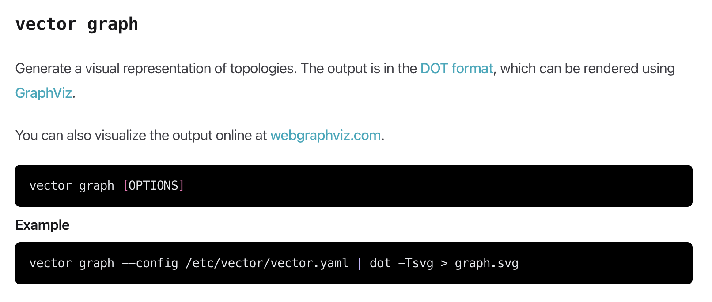

🔧 Quel Vector d’attaque pour votre pipeline d’ingestion de logs ?
v0.3.0-Breizhcamp
- 🐦 @Zeill45
- 👔 Humble développeur et co-directeur technique chez Max Digital Services
- 🤠 On recrute!
⚠️ Disclaimer
- 🪶 léger
- ⚡ performant
- 🦀 robuste

source: vector.dev
Comment démarrer
# install one liner
curl --tlsv1.2 -sSfL https://sh.vector.dev | bash
# lancer le binaire avec hot reload 🔥
vector -c vector.yaml -w
# lancement avec Docker 🐋
docker run \
-v $PWD/vector.yaml:/etc/vector/vector.yaml:ro \
timberio/vector
vector.yaml
sources:
in:
type: "demo_logs"
format: "apache_common"
sinks:
out:
inputs:
- "in"
type: "console"
encoding:
codec: "text"
encoding.codec: "json"
sources:
in:
type: "demo_logs"
format: "apache_common"
sinks:
out:
inputs:
- "in"
type: "console"
encoding:
codec: "json"
🚰 Sources
📁 file
sources:
my_source_id:
type: "file"
include:
- "/var/log/**/*.log"
🗃️ file (advanced)
sources:
my_source_id:
type: file
data_dir: /var/local/lib/vector/
exclude:
- /var/log/binary-file.log
file_key: file
glob_minimum_cooldown_ms: 1000
host_key: host
ignore_older_secs: 600
include:
- /var/log/**/*.log
line_delimiter: "\n"
max_line_bytes: 102400
max_read_bytes: 2048
offset_key: offset
read_from: beginning
rotate_wait_secs: 9223372036854776000
🐋 docker_logs
sources:
my_source_id:
type: docker_logs
exclude_containers:
- exclude_
include_containers:
- generate_logs
include_images:
- httpd
include_labels:
- org.opencontainers.image.vendor=Vector
🎯 sinks
loki
sinks:
my_sink_id:
type: "loki"
inputs:
- "my-source-or-transform-id"
endpoint: "http://localhost:3100"🤝 Garanties claires
🔨 transforms
remap (VRL)
transforms:
remap_apache:
inputs:
- "generate_apache"
type: "remap"
source: |
structured = parse_apache_log!(.message, format:"common")
#. = merge(., structured)
.structured = structured
route
transforms:
apache_router:
type: "route"
inputs:
- remap_apache
route:
errors: .status >= 400
ok: .status < 300
reroute_unmatched: false # default is true
# routes
apache_router.errors
apache_router.ok
# unmatched route
apache_router._unmatched
Champ timestamp custom
log_schema:
# Applies to all sources, sinks, and transforms!
timestamp_key: "@timestamp"
Méthodes utilitaires
# suppression explicite de propriétés
del(.size)
# parsing logfmt ('key1=value1 key2=value2')
structured = parse_key_value!(.message)
# remplacement d'un secret
redact(.host, filters: [r'\d+\.\d+\.\d+\.\d+'])
redact(.host, filters: [r'\d+\.\d+\.\d+\.\d+'], redactor: sha2)
👷 Topologies
🏗️ "archi" des slides


HTTP sink
sinks:
out:
type: "http"
uri: "http://127.0.0.1:9000/vector"
method: "post"
compression: "none"
encoding:
codec: "json"
mes retours
- 😍 la doc
- 🪶 léger et auto porté
- 🧱 composable et démarrage rapide
- metrics, tests, ... à creuser
😍 graph de topologie
I ❤️ feedback
Références
- Look terminal: codepen.io/robinselmer
- Doc Vector: vector.dev